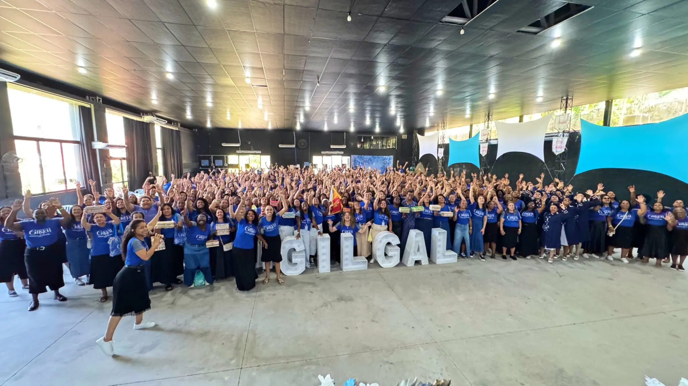
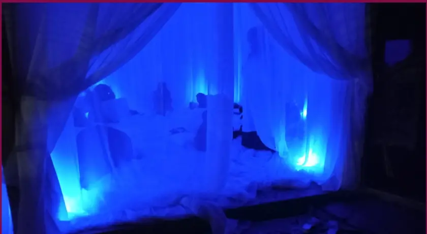
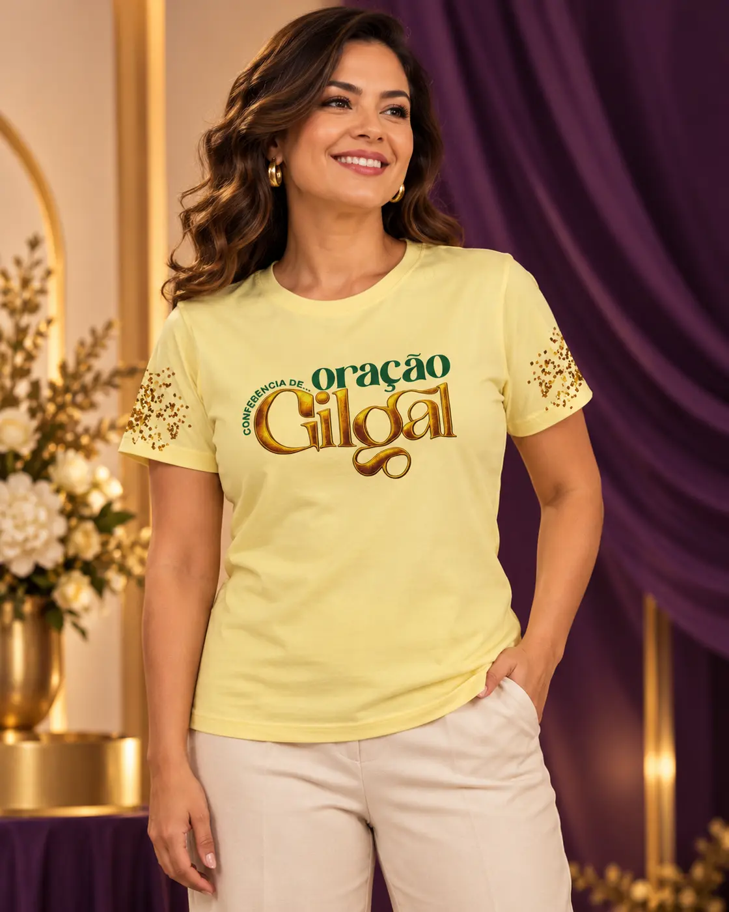
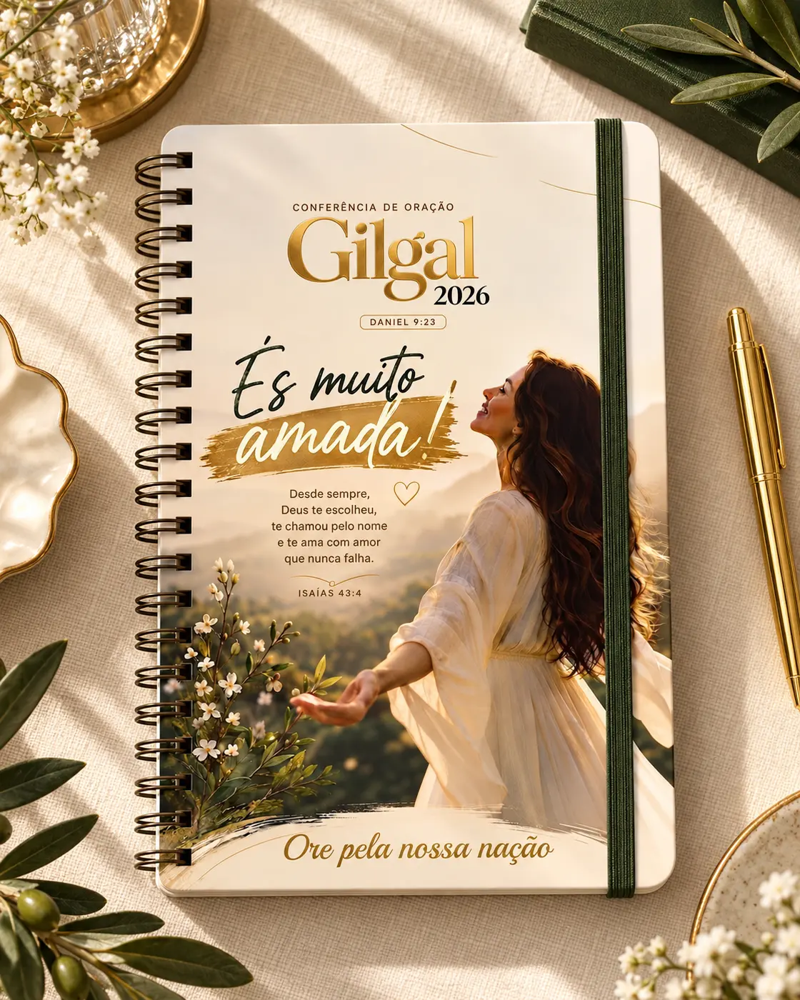
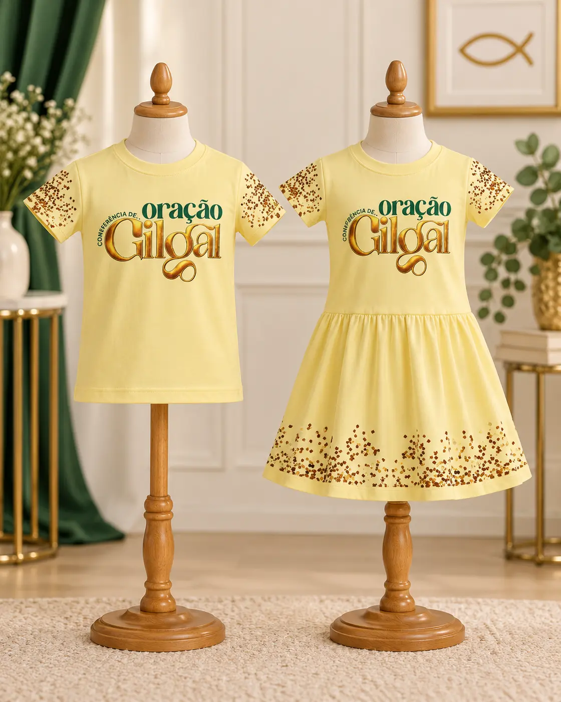

Oração nos aproxima de Deus, trazendo direção, paz e consolo, além de nos ensinar a interceder pelos outros.
Conferência de Oração
Gilgal2027
Profetiza, Filho do Homem
Ezequiel 37:9
Um encontro. Um sopro. Uma geração de pé.
—dias
—horas
—minutos
O tema de 2027
Ezequiel 37:9
“Profetiza
ao Espírito”
“Assim diz o Senhor Deus: Vem dos quatro ventos, ó espírito, e assopra sobre estes mortos, para que vivam.”Ezequiel 37:9
Por que Gilgal?
Mencionado 39 vezes na Bíblia,
Gilgal é lugar de recomeço.
Gilgal é um local significativo para o povo de Israel: cenário de memória, santidade, renúncia, alimento e restauração. Um lugar onde Deus encerra ciclos e prepara seu povo para um novo tempo.
Que esta conferência de oração seja um marco de transformação em sua vida. Ore, louve, entregue-se de coração e confie: Deus proporcionará grandes vitórias.

Nossa visão
Um ambiente propício para a busca espiritual.
A Conferência de Oração Gilgal existe para promover comunhão com Deus, fortalecer a fé e reunir mulheres em uma experiência viva de oração.

Nossos objetivos01 02 03
Oração. Louvor. Palavra.
Louvor expressa gratidão, reconhece a grandeza de Deus e fortalece a fé e a unidade.
Palavra alimenta o crescimento espiritual, orienta e transforma o coração e a mente.
Recordações
Doze pedras erguidas para que a travessia do Jordão jamais fosse esquecida.
Santidade
O opróbrio foi removido, marcando o fim de um ciclo de rebelião e murmuração.
Renúncia
Um chamado à obediência, à entrega e à renovação da aliança com Deus.
Alimento
O povo recebeu um novo alimento para sustentar o novo tempo que começava.
Restauração
A Páscoa foi celebrada, a aliança renovada e o povo preparado para a vitória.
Nossa história
Edições anteriores
Memórias de oração, comunhão e fé. Os álbuns serão disponibilizados aqui.
2024
Fotos desta edição em breve.
2026
Fotos desta edição em breve.
O nosso lugar
Vale das
Águas
Três dias cercados pela natureza, em um ambiente preparado para oração, descanso e comunhão.
Quando18, 19 e 20 de setembro de 2027
OndeCachoeiras de Macacu · Rio de Janeiro


Nosso destinoAcampamento
Vale das ÁguasCachoeiras de Macacu · RJ
Vale das ÁguasCachoeiras de Macacu · RJ
Venham juntas
Uma pessoa recebe o convite.
Uma caravana inteira vive o chamado.
Reúna sua igreja, seu ministério ou seu grupo de amigas. Teremos atendimento dedicado para organizar a chegada da sua caravana à Gilgal 2027.
Quero montar uma caravana4ventos1só clamor
Loja Gilgal
Mais que produtos.
É um propósito.
Uma coleção criada para guardar o que vivemos, presentear quem amamos e manter a mensagem da Gilgal presente em cada detalhe.
Coleção especial · Gilgal 2026Não leve apenas uma lembrança.
Não leve apenas uma lembrança.
Leve uma mensagem.
Escolha o seu produto, fale com a nossa equipe e confirme a disponibilidade. Quantidades limitadas.
Mais pedida

Coleção 2026
Blusa Gilgal
Vista a mensagem que marcou uma geração de mulheres em oração.R$ 60,00Quero a minha
Fé para todos os dias
Agenda Gilgal
Planos, orações e sonhos reunidos em um lugar que inspira propósito.R$ 30,00Quero a minhaMelhor escolha
Experiência completa
Kit Gilgal
Um presente cheio de significado: produtos para oração, organização e uso diário.R$ 130,00Consulte a composição e a disponibilidade.Quero o kit completo
Moda infantil
Gilgal para as pequenas
Para que elas cresçam entendendo que também fazem parte desta geração de oração.Vestido R$ 60,00Blusa R$ 50,00
Escolher o modeloComplete sua coleção
Pequenos detalhes.
Grandes significados.
Bolsa, nécessaire, tapetinho de oração, caneca, almofada e toalhinha.
Preço a confirmarConsultar pelo WhatsApp
Inscrições 2027
O vale está chamando.
Você vem?
Garanta seu lugar para viver três dias de oração, comunhão e presença de Deus.
Inscreva-seFaça parte desta obra
Seja um colaborador de Gilgal.
Você pode participar em oração, estar presente e semear na vida de pessoas. Cada gesto de fé ajuda esta mensagem a alcançar mais mulheres, famílias e igrejas.
Quero ser colaboradorPermaneça perto
Há mais vida
por vir.
Acompanhe os canais oficiais e receba as novidades sobre inscrições, caravanas e a coleção de 2027.
Idealizadora do evento Angelita Almeida
gilgalconferencia.com.br